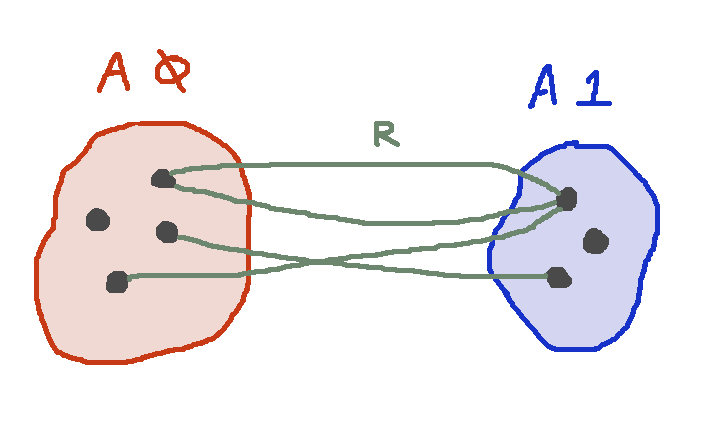
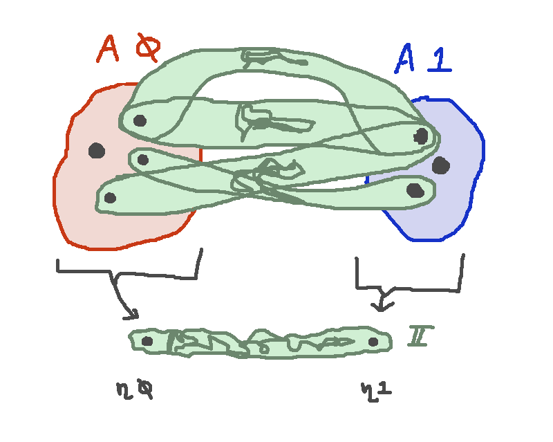

Parametricity via Parametricity
I've been trying for a little while to develop a vague idea into a more concrete one.
My goal is to get a better understanding of why the interval in internalized parametricity is "too weird"
to simply be a primitive type that we throw into the big sack of types. It seems to bring extra
baggage with it: either "colors", or substructurality, or some funny scoping or context business.
The idea that this note is about (which, as always, I have to add the disclaimer that for all I know
it isn't original — I don't feel like I've read the literature exhaustively enough to be very confident)
is that an explanation can be given for what the interval "is" that is a bit cheekily recursive.
The explanation is: the interval is a fresh type that we quantify over, and its properties can be
deduced by appealing to parametricity theorems!
I retain some hope, beyond the scope of this note, that "implementing parametricity with parametricity"
might be in some way a useful thought, and not a mere joke. By analogy with how HOAS is "implementing
higher-order functions with higher-order functions", maybe it's possible to delineate a relatively
simple special case of parametricity from which all the rest conveniently follows.
And if nothing else, it already feels useful to me as just a narrative lens through which I can
look at existing internalized parametricity and rationalize their mechanisms by "translating them away"
into what feels to me like simpler stuff, even though I still have to apply some unjustified primitive intuitions
about parametricity to the "simpler stuff".
Preliminaries
Let's first of all fix a type $S$ which is the shape of a relation of interest. The case of free theorems for
binary relations is when $S = 2$. We assume there is some type family $A : S \to \rset$ that gives
the boundary types of a relation, and the relation itself is a $R : \rset$ with a projection map
\[p : R \to (s : S) \to A\ s\]

The Interval
We imagine that there is some type $\I$ with an inclusion $\eta : S \to \I$ of its endpoints.
The Gel Type
We wish to somehow embody the relation $R$ as a type, so that when we encounter a type like
\[ (X : \rset) \to X \to X \]
we can instantiate $X$ with it to learn how the term of the polymorphic type interacts with that relation.
The plan is to construct the gel type as a type over $\I$ as a pushout, which includes:
- A copy of the interval for every element of $R$, the "strand of $r$"
- A copy of the boundary type $A\ s$ for every element $s : S$, the "endpoints at $s$"
- For every $s$ and $r$, we assert that the $s^{th}$ endpoint of the strand at $r$ is equal
to the endpoint at $s$ that aries from the $s^{th}$ projection of $r$,
namely $p\ r\ s$.

Here we answer the question of what the interval actually is: we don't postulate that it exists
with such and such properties, but rather simply let it be an argument to the gel type.
\[\begin{array}{l}
\mathbf{data}\ \mathsf{Gel}\ (\I : \rset) (\eta : S \to \I) : \I \to \rset\ \mathbf{where}\\
\qquad \mathsf{gstrand} : (r : R )(i:\I) \to \mathsf{Gel}\ i\\
\qquad \mathsf{gendp}: (s : S) (a : A\ s) \to \mathsf{Gel}\ (\eta\ s)\\
\qquad \mathsf{gpath} : (r : R)(s : S) \to \mathsf{gstrand}\ r\ (\eta\ s) \equiv \mathsf{gendp}\ s\ (p\ r\ s)\\
\end{array}\]
Free Theorem
Suppose we have a term
\[q : (X : \rset) \to X \to X\]
We can weaken it to also include in its context a fresh interval type,
and a fresh variable of the interval:
\[\lambda \I\eta i . q : (\I : \rset) (\eta : S \to \I) (i : \I) (X : \rset) \to X \to X\]
And we can plug in $\mathsf{Gel}\ i$ for $X$:
\[\lambda \I\eta i . q\ (\mathsf{Gel}\ \I\ \eta\ i) : \]
\[ (\I : \rset) (\eta : S \to \I) (i : \I) \to (\mathsf{Gel}\ \I\ \eta\ i) \to (\mathsf{Gel}\ \I\ \eta\ i)\]
What we have emphatically not done here is construct global
element of a gel-to-gel map over the interval that we've
added to our type theory. We've instead constructed a global
element of a gel-to-gel map over any interval type. Which means
we're allowed to instantiate $\I$ and $\eta$ with various things of our choosing.
Instantiation to get a relation map
Let's try plugging in
\[\begin{array}{rcl}
\I&:=& S + 1\\
\eta &:=& \binl\\
i &:=& \binr\ *
\end{array}\]
We find
\[ q\ (\mathsf{Gel}\ (S + 1)\ \binl\ (\binr\ *)) : \]
\[ (\mathsf{Gel}\ (S + 1)\ \binl\ (\binr\ *)) \to (\mathsf{Gel}\ (S + 1)\ \binl\ (\binr\ *))\]
If we stare at the type $\mathsf{Gel}\ (S + 1)\ \binl\ (\binr\ *)$ we find
that the only constructor we can use to populate it is $\mathsf{gstrand}$. So we have
\[ R \cong \mathsf{Gel}\ (S + 1)\ \binl\ (\binr\ *)\]
and thus "morally",
if we ignore the maps that mediate the relevant isomorphism, we have
\[q\ (\mathsf{Gel}\ (S + 1)\ \binl\ (\binr\ *)) : R \to R\]
Instantiation to get a boundary map
Choose a particular $s : S$, and try plugging in
\[\begin{array}{rcl}
\I&:=& S\\
\eta &:=& \rid\\
i &:=& s
\end{array}\]
We find
\[ q\ (\mathsf{Gel}\ S\ \rid\ s) : \]
\[ (\mathsf{Gel}\ S\ \rid\ s) \to (\mathsf{Gel}\ S\ \rid\ s)\]
We can reason that
\[A\ s \cong \mathsf{Gel}\ S\ \rid\ s\]
Because although either the constructor $\mathsf{gstrand}$ or $\mathsf{gendp}$ can
be used to construct a $\mathsf{Gel}\ S\ \rid\ s$, the path constructor
$\mathsf{gpath}$ entails that all of the $\mathsf{gstrand}$ terms are already
equal to some $\mathsf{gendp}$. Thus "morally", we have
\[ q\ (\mathsf{Gel}\ S\ \rid\ s) : A\ s \to A\ s\]
Appealing to Parametricity
We now want to consider what the free theorem is for the type
\[(\I : \rset) (\eta : S \to \I) (i : \I) \to (\mathsf{Gel}\ \I\ \eta\ i) \to (\mathsf{Gel}\ \I\ \eta\ i)\]
It says that for any relation $J$ between some types $\I_1$ and $\I_2$, and any compatible
$\eta_1, \eta_2$, and compatible $i_1, i_2$, then we will obtain a function that maps
compatible elements of
\[\mathsf{Gel}\ \I_1\ \eta_1\ i_1\hbox{ and }\mathsf{Gel}\ \I_2\ \eta_2\ i_2\]
to compatible elements of those same two types,
\[\mathsf{Gel}\ \I_1\ \eta_1\ i_1\hbox{ and }\mathsf{Gel}\ \I_2\ \eta_2\ i_2\]
So fix an $s:S$ and let that relation be the function $J : S + 1 \to S$ which takes the extra element
of $S + 1$ to $s \in S$. It can be checked that the free theorem gives us a commutative
square
\[\begin{CD}
R @>{q\ (\mathsf{Gel}\ (S + 1)\ \binl\ (\binr\ *))}>> R \\
@V{p\ -\ s}VV @VV{p\ -\ s}V\\
A\ s @>>{q\ (\mathsf{Gel}\ S\ \rid\ s)}> A\ s
\end{CD}\]
In other words, we do have a genuine relation homomorphism from $R$ to itself, which is the
desired free theorem for $(X : \rset) \to X \to X$.